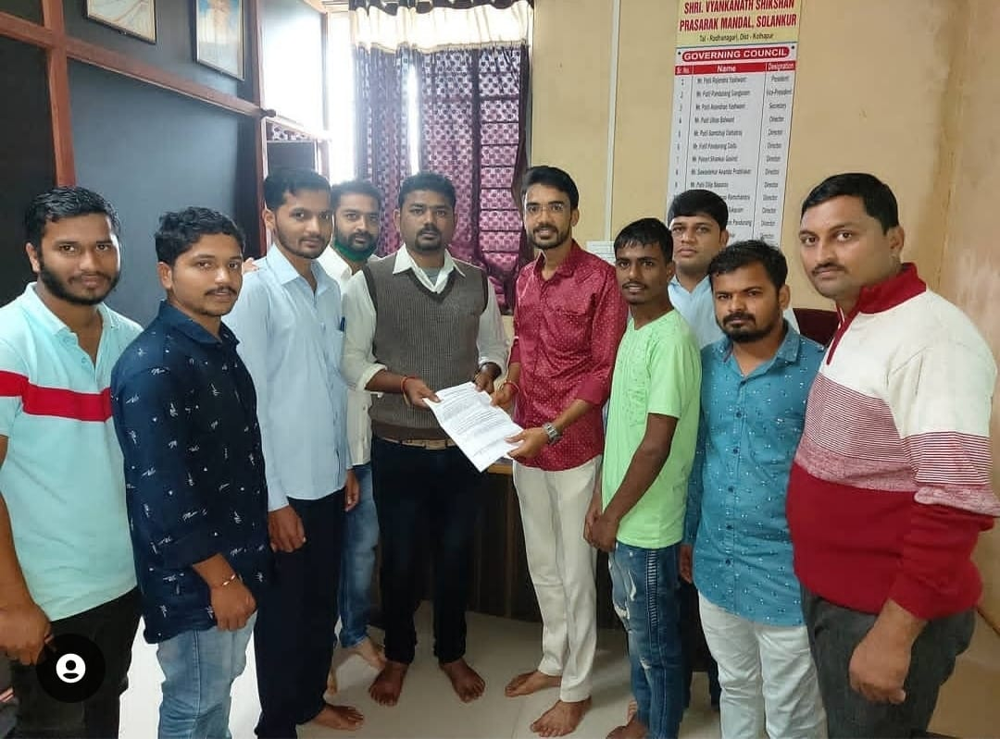

मा स्वप्निल पाटील चॅरिटेबल ट्रस्ट व नेहरू युवा केंद्र भारत सरकार यांच्या संयुक्त विद्यमाने ठीकपुली हायस्कूल येथे कॅच द रेन कार्यक्रम जल जागरण अभियान घेण्यात आले पाणी आडवा पाणी जिरवा त्याच्याविषयी प्रबोधन करण्यात आले व्याख्याते नेहरू युवा केंद्राचे मार्गदर्शक कैलास चौगुले सर उपस्थित होते ट्रस्टचे संस्थापक स्वप्निल पाटील प्राचार्य हायस्कूलचा सर्व स्टाफ विद्यार्थी विद्यार्थिनी उपस्थित होत्या.
राधानगरी तालुक्यातील प्रत्येक महाविद्यालय मध्ये जाऊन जे गोरगरीब विद्यार्थी आहेत त्यांच्यासाठी निशुल्क फी आयोजन करण्यात आले त्यावेळी महाविद्यालयाला ट्रस्टमार्फत लेटर देण्यात आले ट्रॅक्टरचे संस्थापक अध्यक्ष माननीय स्वप्निल दादा पाटील क्लार्क सुदीप पाटील ट्रस्टचे सदस्य व महाविद्यालयाचे स्टाफ उपस्थित होते.

मा स्वप्नील पाटील चॅरिटेबल ट्रस्ट मार्फत घेण्यात आलेला छत्रपती राजाराम महाराज उद्योजकता व कौशल्य विकास अभियान अंतर्गत महाराष्ट्र कृषी कौशल्य विकास कार्यक्रम, उद्योजकता कौशल्य व कृषी विषयी माहिती देतेवेळी मा दौलत गिराम( मू पो परभणी )कौशल्य विकास व प्रमुख उपस्थिती स्वप्नील पाटील अध्यक्ष स्वप्नील पाटील चॅरिटेबल ट्रस्ट,उदय पाटील रोहित पाटील नवनाथ पाटील व गावातील ग्रामस्थ उपस्थित होते.